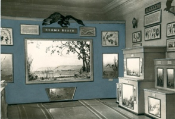
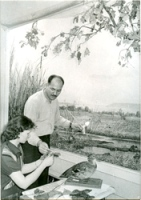
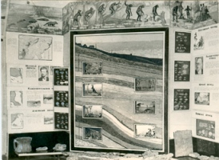

После смерти И.В. Сталина (1953 г.) и осуждения «культа личности» на XX съезде КПСС (1956 г.) в стране началась массовая реабилитация жертв политических репрессий, в том числе учёных-генетиков. В печати появляются статьи с критикой Т.Д. Лысенко. В 1955 г. был реабилитирован Н.И. Вавилов. В связи с этими событиями в 1956 г. сотрудники отдела под руководством заведующей В.С. Чекрыгиной начинают его реконструкцию. В 1957 г. появляется обновленная экспозиция «Животный мир Саратовской области». Впервые животные представлены в виде биогрупп, в естественной природной обстановке. В новую экспозицию органично вписалась первая диорама «Пойма Волги», созданная ранее саратовскими художниками В.П. Палимпсестовым и В.Т. Саморуковой.
|  |  |  |
| Фрагмент экспозиции отдела природы по теме «Животный мир Саратовской области». Фото 1957 г. | Художники В.П. Палимпсестов и В.Т. Саморукова за оформлением первой диорамы «Пойма Волги». Фото 1954 г. | Вертикальный геологический разрез через Соколовую гору с палеоландшафтами в отделе природы музея. Фото 1960-х гг. |
Продолжается работа над новой экспозицией отдела. Проводятся природоведческие экспедиции по сбору геологического и палеонтологического материала, экспонатов, рассказывающих о лесах и степях, данных по созданию Саратовского и Волгоградского водохранилищ совместно с учёными СГУ и художниками - диорамистами. Во второй половине 1960-х гг. экспонируются темы «Растительный мир» и «Геологическое прошлое», создаётся раздел «Советский творческий дарвинизм». Сотрудники отдела проводят большую научно-просветительную работу. Выезжают в районы области с передвижными выставками «Геология и полезные ископаемые», «Природные богатства Саратовской области», «Полезные и вредные животные». Ежегодно в музее для юннатов Волжского района совместно с Волжским районным советом ВООП организуется весенний праздник – День птиц. С беседами о птицах, как правило, выступали А.П. Победоносцев – профессор Пединститута, и Р.А. Девишев – старший преподаватель кафедры зоологии позвоночных СГУ, председатель секции охраны полезных птиц и зверей областного совета ВООП.